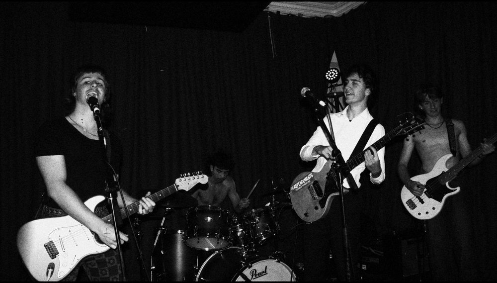
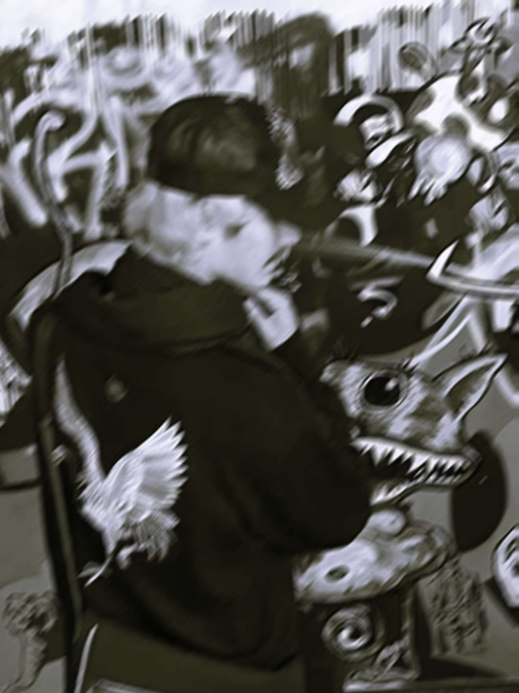

Cicada
Cicada, is a duo located in Greensborough, Melbourne, Victoria. They continue to enlighten the world by spreading their electronic numbers that soothe the soul. Their fusion of ambience, dance and trance helps shape the cosmic flubber that binds Cicadas' creative minds. Their first release ‘The Red Wheelbarrow’ reminisces on the boyish love the duo shares for nature and experience. Shortly following, Cicada dropped their single ‘Bouncy Houses’. The autotune filled helium-tune classic that sets the stage for the duo’s upcoming album.

The Subordinates
The Subordinates, in themselves, are each raging balls and energy and passion that continue to snowball into the light and forefront of Melbourne's punk rock scene. The band's debut single ‘I Care A Little Bit (But Not That Much) / Oh,Sweet Vanilla’ features exhilarating vocals that prove to shake the soul of any Aussie pub-goer, and masterful guitarist craftsmanship to get bodies moving in all directions. THE SUBOORDINATION, a large sum of notorious delinquents that live by their own rules are the fans of the band. They are undeniable, unphased and most importantly unrefined.
Krest
Krest. If he said it, you know it's real. The mysterious man himself resides in the underground of an experimental trap and rap. Krest’s most recent drop ‘PSA’ featuring the smash hit ‘LeoPrint$’, featuring Norco and ATM leads the way for a new sound that proves to shake the eardrums. Under random circumstances, Krest, as a self proclaimed rapper has found himself expressing his creative genius through an on stage presence at The Subordinates gigs. He strives to break rap's current norm and break into a new style that features the certain aesthetic Krest lives and breathes for.
Our favourite Subbies quote
Its Lach 'n' Roll, baby - Lachlan mcgregor